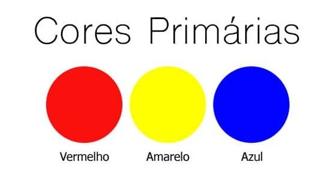
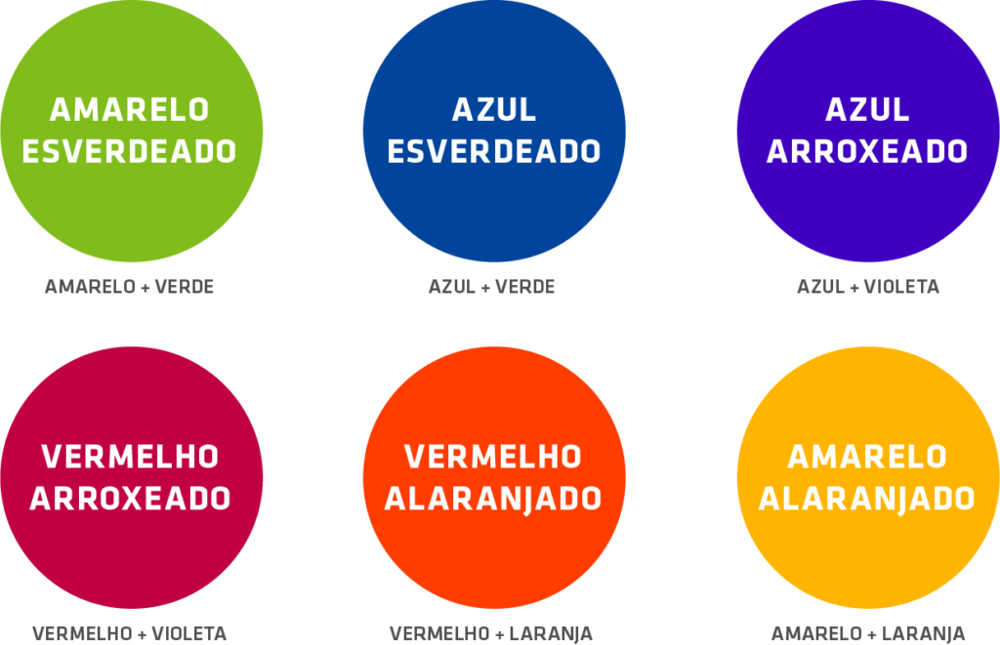
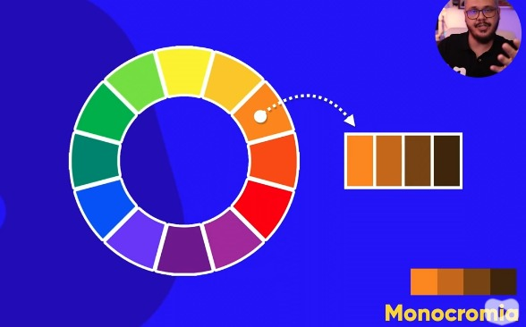
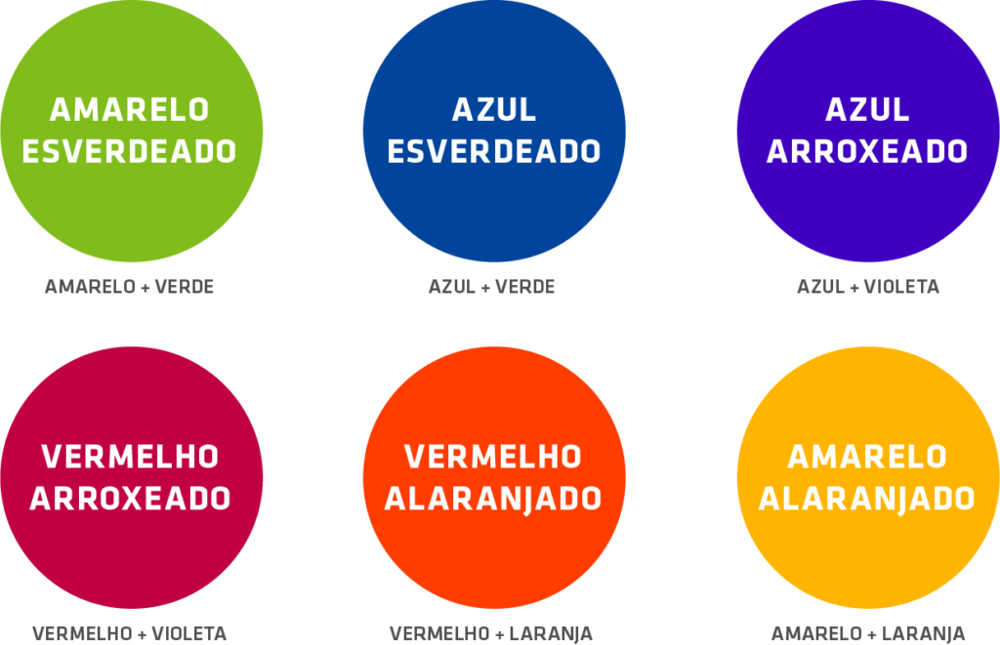
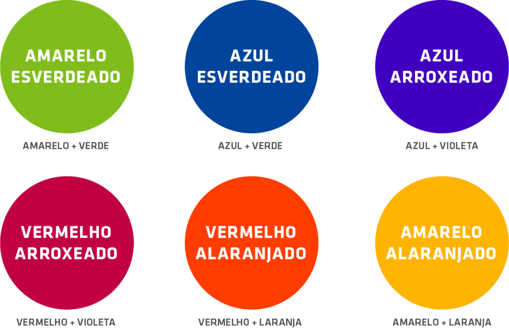

Para ter um site com harmonia de cores, vc precisa estudar sobre a arte das cores, ou a ciência das cores.
Aqui temos o circulo cromatico
Cores primárias e principais

Cores Secundárias
Cores Terciarias

Cores Héxatriangulares
Cores em Quadrado
Cores Tétradicas
Cores em monocromia


 
